Modify the data using the code provided in the zip file
First, modify the code provided with the download to read in the data from a local file source (your downloaded .csv files) and combine the two data frames. Use local paths as they do in their code.
d1=read.table("C:/Users/upnjo/OneDrive/Documents/ST558/HomeWork5/student+performance/student/student-mat.csv",sep=";",header=TRUE)d2=read.table("C:/Users/upnjo/OneDrive/Documents/ST558/HomeWork5/student+performance/student/student-por.csv",sep=";",header=TRUE)d3=merge(d1,d2,by=c("school","sex","age","address","famsize","Pstatus","Medu","Fedu","Mjob","Fjob","reason","nursery","internet"))print(nrow(d3)) # 382 students
[1] 382
Read in and combine the data using functions from the tidyverse
Second, read in and combine the data using functions from the tidyverse. Use an inner_join() on the variables they used in their code. Do you notice any issues? Make a note of the issue
# Load required librarieslibrary(tidyverse)
── Attaching core tidyverse packages ──────────────────────── tidyverse 2.0.0 ──
✔ dplyr 1.1.4 ✔ readr 2.1.5
✔ forcats 1.0.0 ✔ stringr 1.5.1
✔ ggplot2 3.5.1 ✔ tibble 3.2.1
✔ lubridate 1.9.3 ✔ tidyr 1.3.1
✔ purrr 1.0.2
── Conflicts ────────────────────────────────────────── tidyverse_conflicts() ──
✖ dplyr::filter() masks stats::filter()
✖ dplyr::lag() masks stats::lag()
ℹ Use the conflicted package (<http://conflicted.r-lib.org/>) to force all conflicts to become errors
# Read in the datamat_data <-read_delim("C:/Users/upnjo/OneDrive/Documents/ST558/HomeWork5/student+performance/student/student-mat.csv", delim =";")
Rows: 395 Columns: 33
── Column specification ────────────────────────────────────────────────────────
Delimiter: ";"
chr (17): school, sex, address, famsize, Pstatus, Mjob, Fjob, reason, guardi...
dbl (16): age, Medu, Fedu, traveltime, studytime, failures, famrel, freetime...
ℹ Use `spec()` to retrieve the full column specification for this data.
ℹ Specify the column types or set `show_col_types = FALSE` to quiet this message.
Warning in inner_join(mat_data, por_data, by = c("school", "sex", "age", : Detected an unexpected many-to-many relationship between `x` and `y`.
ℹ Row 79 of `x` matches multiple rows in `y`.
ℹ Row 79 of `y` matches multiple rows in `x`.
ℹ If a many-to-many relationship is expected, set `relationship =
"many-to-many"` to silence this warning.
From the warning message looks like there are duplicate values in both data sets
The correct inner_join()
Use an inner_join() on all variables other than G1, G2, G3, paid, and absences. Use this form of the combined data in further exercises.
# Define the variables to join on (all except G1, G2, G3, paid, and absences)join_vars <-setdiff(names(mat_data), c("G1", "G2", "G3", "paid", "absences"))# Perform inner joincombined_data <-inner_join( mat_data, por_data, by = join_vars)# Rename columns to distinguish between math and Portuguese gradescombined_data <- combined_data %>%rename(G1_math = G1.x,G2_math = G2.x,G3_math = G3.x,paid_math = paid.x,absences_math = absences.x,G1_por = G1.y,G2_por = G2.y,G3_por = G3.y,paid_por = paid.y,absences_por = absences.y )# Display the first few rows and structure of the combined dataprint(head(combined_data))
# A tibble: 6 × 38
school sex age address famsize Pstatus Medu Fedu Mjob Fjob reason
<chr> <chr> <dbl> <chr> <chr> <chr> <dbl> <dbl> <chr> <chr> <chr>
1 GP F 18 U GT3 A 4 4 at_home teacher course
2 GP F 17 U GT3 T 1 1 at_home other course
3 GP F 15 U GT3 T 4 2 health servic… home
4 GP F 16 U GT3 T 3 3 other other home
5 GP M 16 U LE3 T 4 3 services other reput…
6 GP M 16 U LE3 T 2 2 other other home
# ℹ 27 more variables: guardian <chr>, traveltime <dbl>, studytime <dbl>,
# failures <dbl>, schoolsup <chr>, famsup <chr>, paid_math <chr>,
# activities <chr>, nursery <chr>, higher <chr>, internet <chr>,
# romantic <chr>, famrel <dbl>, freetime <dbl>, goout <dbl>, Dalc <dbl>,
# Walc <dbl>, health <dbl>, absences_math <dbl>, G1_math <dbl>,
# G2_math <dbl>, G3_math <dbl>, paid_por <chr>, absences_por <dbl>,
# G1_por <dbl>, G2_por <dbl>, G3_por <dbl>
Next, for the math data, Portuguese, and combined data, choose four categorical variables you are interested in and convert those into factor variables in each tibble (use the same four variables in each). Use the mutate() function to accomplish this.
For this part I am selecting school, sex, address and internet categorical variables as these variables are interesting demographic and environmental factors that could influence students performance.
# Choose four categorical variables to convert to factors# We'll use: school, sex, address, and internet# Convert chosen variables to factors in math datamat_data <- mat_data %>%mutate(school =factor(school),sex =factor(sex),address =factor(address),internet =factor(internet) )# Convert chosen variables to factors in Portuguese datapor_data <- por_data %>%mutate(school =factor(school),sex =factor(sex),address =factor(address),internet =factor(internet) )# Convert chosen variables to factors in combined datacombined_data <- combined_data %>%mutate(school =factor(school),sex =factor(sex),address =factor(address),internet =factor(internet) )# Display the structure of each dataset to confirm the changesprint("Structure of math data:")
• Look at how the data is stored and see if everything makes sense. • Document the missing values in the data.
The str(combined_data) gives us more information about the structure of the data. In this tibble, we have 33 columns (variables) and 395 rows (observations) To check if there are any missing values we can use is.na()
Looks like we do not have any missing values for any variable in this tibble.
##Categorical variables
• Create a one-way contingency table, a two-way contingency table, and a three-way contingency table for some of the factor variables you created previously. Use table() to accomplish this. – Interpret a number from each resulting table (that is, pick out a value produced and explain what that value means.)
# 1. One-way contingency tableone_way_table <-table(combined_data$school)print("One-way contingency table for school:")
[1] "One-way contingency table for school:"
print(one_way_table)
GP MS
287 33
# Interpretationgp_count <- one_way_table["GP"]ms_count <- one_way_table["MS"]print(paste("There are", gp_count, "students from GP school (Gabriel Pereira) in the dataset."))
[1] "There are 287 students from GP school (Gabriel Pereira) in the dataset."
print(paste("There are", ms_count, "students from MS school (Mousinho da Silveira) in the dataset."))
[1] "There are 33 students from MS school (Mousinho da Silveira) in the dataset."
# 2. Two-way contingency tabletwo_way_table <-table(combined_data$school, combined_data$sex)print("Two-way contingency table for school and sex:")
[1] "Two-way contingency table for school and sex:"
print(two_way_table)
F M
GP 153 134
MS 21 12
# Interpretationfemale_ms_count <- two_way_table["MS", "F"]print(paste("There are", female_ms_count, "female students from MS school."))
[1] "There are 21 female students from MS school."
# 3. Three-way contingency tablethree_way_table <-table(combined_data$school, combined_data$sex, combined_data$internet)print("Three-way contingency table for school, sex, and internet access:")
[1] "Three-way contingency table for school, sex, and internet access:"
print(three_way_table)
, , = no
F M
GP 26 14
MS 5 3
, , = yes
F M
GP 127 120
MS 16 9
# Interpretationmale_gp_internet <- three_way_table["GP", "M", "yes"]print(paste("There are", male_gp_internet, "male students from GP school with internet access."))
[1] "There are 120 male students from GP school with internet access."
• Create a conditional two-way table using table(). That is, condition on one variable’s setting and create a two-way table. Do this using two different methods: – Once, by subsetting the data (say with filter()) and then creating the two-way table – Once, by creating a three-way table and subsetting it
# Method 1: Subsetting the data with filter() and then creating the two-way table# For GP schoolgp_data <- combined_data %>%filter(school =="GP")gp_table <-table(gp_data$sex, gp_data$internet)print("Conditional two-way table for GP school (sex and internet) using filter():")
[1] "Conditional two-way table for GP school (sex and internet) using filter():"
print(gp_table)
no yes
F 26 127
M 14 120
# For MS schoolms_data <- combined_data %>%filter(school =="MS")ms_table <-table(ms_data$sex, ms_data$internet)print("Conditional two-way table for MS school (sex and internet) using filter():")
[1] "Conditional two-way table for MS school (sex and internet) using filter():"
print(ms_table)
no yes
F 5 16
M 3 9
# Method 2: Creating a three-way table and subsetting it# Create the three-way tablethree_way_table <-table(combined_data$school, combined_data$sex, combined_data$internet)# Subset for GP schoolgp_table_2 <- three_way_table["GP", , ]print("Conditional two-way table for GP school (sex and internet) from three-way table:")
[1] "Conditional two-way table for GP school (sex and internet) from three-way table:"
print(gp_table_2)
no yes
F 26 127
M 14 120
# Subset for MS schoolms_table_2 <- three_way_table["MS", , ]print("Conditional two-way table for MS school (sex and internet) from three-way table:")
[1] "Conditional two-way table for MS school (sex and internet) from three-way table:"
print(ms_table_2)
no yes
F 5 16
M 3 9
# Verify that the results are the sameprint("Are the GP tables identical?")
[1] "Are the GP tables identical?"
print(identical(gp_table, gp_table_2))
[1] TRUE
print("Are the MS tables identical?")
[1] "Are the MS tables identical?"
print(identical(ms_table, ms_table_2))
[1] TRUE
# Interpretation of a value from the GP tablegp_female_internet <- gp_table["F", "yes"]print(paste("In the GP school, there are", gp_female_internet, "female students with internet access."))
[1] "In the GP school, there are 127 female students with internet access."
# Interpretation of a value from the MS tablems_male_no_internet <- ms_table["M", "no"]print(paste("In the MS school, there are", ms_male_no_internet, "male students without internet access."))
[1] "In the MS school, there are 3 male students without internet access."
• Create a two-way contingency table using group_by() and summarize() from dplyr. Then use pivot_wider() to make the result look more like the output from table().
# Create a two-way contingency table using group_by() and summarize()contingency_table_long <- combined_data %>%group_by(school, sex) %>%summarize(count =n(), .groups ="drop")# Display the long format tableprint("Two-way contingency table in long format:")
[1] "Two-way contingency table in long format:"
print(contingency_table_long)
# A tibble: 4 × 3
school sex count
<fct> <fct> <int>
1 GP F 153
2 GP M 134
3 MS F 21
4 MS M 12
# Use pivot_wider() to reshape the tablecontingency_table_wide <- contingency_table_long %>%pivot_wider(names_from = sex, values_from = count)# Display the wide format tableprint("Two-way contingency table in wide format (similar to table() output):")
[1] "Two-way contingency table in wide format (similar to table() output):"
print(contingency_table_wide)
# A tibble: 2 × 3
school F M
<fct> <int> <int>
1 GP 153 134
2 MS 21 12
# Create the same table using table() for comparisontable_output <-table(combined_data$school, combined_data$sex)print("Two-way contingency table using table():")
[1] "Two-way contingency table using table():"
print(table_output)
F M
GP 153 134
MS 21 12
# Check if the results are the sameprint("Are the results from dplyr and table() methods the same?")
[1] "Are the results from dplyr and table() methods the same?"
• Create a stacked bar graph and a side-by-side bar graph. Give relevant x and y labels, and a title for the plots.
# Create a stacked bar graphstacked_bar <-ggplot(combined_data, aes(x = school, fill = sex)) +geom_bar(position ="stack") +labs(title ="Distribution of Students by School and Sex",x ="School",y ="Number of Students",fill ="Sex") +theme_minimal() +scale_fill_brewer(palette ="Set1")# Display the stacked bar graphprint(stacked_bar)
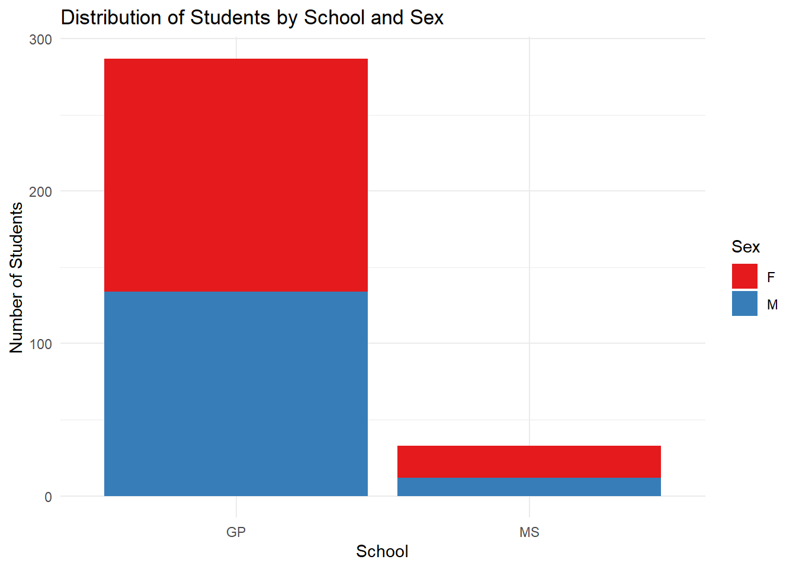
# Create a side-by-side bar graphside_by_side_bar <-ggplot(combined_data, aes(x = school, fill = sex)) +geom_bar(position ="dodge") +labs(title ="Comparison of Student Numbers by School and Sex",x ="School",y ="Number of Students",fill ="Sex") +theme_minimal() +scale_fill_brewer(palette ="Set1")# Display the side-by-side bar graphprint(side_by_side_bar)
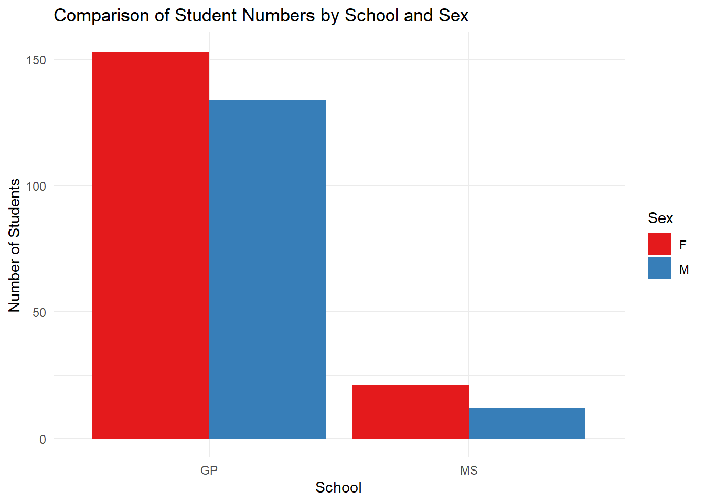
From the graph we can see that Number of students in the GP school are more than MS school. The number female students are more in both schools
##Numeric variables (and across groups)
The numeric variables are age, absences, and the three test grades variables (G1, G2, and G3) from each data set (math and Portuguese).
• Find measures of center and spread for three of these variables (including at least one G3 variable) – Repeat while subsetting the data in a meaningful way.
• Find measures of center and spread across a single grouping variable for three of these variables (including a G3 variable as one of them)
# Calculate measures of center and spread across the 'school' grouping variableschool_stats <- combined_data %>%group_by(school) %>%summarise(# Age statisticsage_mean =mean(age, na.rm =TRUE),age_median =median(age, na.rm =TRUE),age_sd =sd(age, na.rm =TRUE),age_iqr =IQR(age, na.rm =TRUE),# Absences (math) statisticsabsences_mean =mean(absences_math, na.rm =TRUE),absences_median =median(absences_math, na.rm =TRUE),absences_sd =sd(absences_math, na.rm =TRUE),absences_iqr =IQR(absences_math, na.rm =TRUE),# G3 (math) statisticsg3_math_mean =mean(G3_math, na.rm =TRUE),g3_math_median =median(G3_math, na.rm =TRUE),g3_math_sd =sd(G3_math, na.rm =TRUE),g3_math_iqr =IQR(G3_math, na.rm =TRUE) )# Display the resultsprint(school_stats)
• Find measures of center and spread across two grouping variables for three of these variables (including a G3 variable as one of them)
# Measures of center and spread across two grouping variablestwo_way_stats <- combined_data %>%group_by(school, sex) %>%summarise(age_mean =mean(age, na.rm =TRUE),age_sd =sd(age, na.rm =TRUE),absences_mean =mean(absences_math, na.rm =TRUE),absences_sd =sd(absences_math, na.rm =TRUE),g3_math_mean =mean(G3_math, na.rm =TRUE),g3_math_sd =sd(G3_math, na.rm =TRUE),.groups ="drop" )print("Statistics by school and sex:")
[1] "Statistics by school and sex:"
print(two_way_stats)
# A tibble: 4 × 8
school sex age_mean age_sd absences_mean absences_sd g3_math_mean g3_math_sd
<fct> <fct> <dbl> <dbl> <dbl> <dbl> <dbl> <dbl>
1 GP F 16.5 1.03 6.12 9.80 10.5 4.43
2 GP M 16.3 1.16 5.10 5.55 12.0 3.96
3 MS F 17.7 0.577 3.33 5.04 10.0 4.63
4 MS M 18 0.603 3.58 3.73 9.58 4.27
• Create a correlation matrix between all of the numeric variables
print("- Age and math grades: Weak negative correlation (-0.11 to -0.21)")
[1] "- Age and math grades: Weak negative correlation (-0.11 to -0.21)"
print("- Absences and grades: Very weak negative correlation (mostly < -0.15)")
[1] "- Absences and grades: Very weak negative correlation (mostly < -0.15)"
# 3. Other notable correlations:print("\nOther notable correlations:")
[1] "\nOther notable correlations:"
print("- Absences_math and absences_por: Moderate positive correlation (0.56)")
[1] "- Absences_math and absences_por: Moderate positive correlation (0.56)"
# 4. Implications:print("\nImplications:")
[1] "\nImplications:"
print("- Strong correlation between grades across periods suggests consistent performance")
[1] "- Strong correlation between grades across periods suggests consistent performance"
print("- Moderate correlation between math and Portuguese grades indicates some skill transfer")
[1] "- Moderate correlation between math and Portuguese grades indicates some skill transfer"
print("- Weak negative correlation with age might suggest slight disadvantage for older students")
[1] "- Weak negative correlation with age might suggest slight disadvantage for older students"
print("- Weak impact of absences on grades, but consistent across subjects")
[1] "- Weak impact of absences on grades, but consistent across subjects"
print("- Students with high absences in one subject likely have high absences in the other")
[1] "- Students with high absences in one subject likely have high absences in the other"
Strong positive correlations:
There’s a very strong positive correlation between G1, G2, and G3 for both math (0.82 to 0.91) and Portuguese (0.83 to 0.89). This suggests that performance is quite consistent across the three grading periods for each subject. There’s a moderate to strong positive correlation between math and Portuguese grades (ranging from 0.48 to 0.60). This indicates that students who perform well in one subject tend to perform well in the other, suggesting some transfer of skills or general academic ability.
Weak negative correlations:
Age has a weak negative correlation with math grades (-0.11 to -0.21). This might suggest that older students tend to perform slightly worse in math, though the relationship is not strong. Absences (both math and Portuguese) have very weak negative correlations with grades (mostly < -0.15). This suggests that while increased absences are associated with lower grades, the relationship is not strong in this dataset.
Implications:
The strong correlations between grades across periods (G1, G2, G3) for both subjects suggest that early performance is a good predictor of final grades. This could be useful for early intervention strategies. The moderate correlation between math and Portuguese grades indicates that there might be some common factors influencing performance in both subjects. This could inform cross-disciplinary teaching strategies. The weak negative correlation with age might warrant further investigation. It could be due to various factors such as older students having taken breaks in their education or facing different challenges. The relatively weak correlation between absences and grades is somewhat surprising. It suggests that other factors might be more important in determining academic performance in this dataset. The correlation between math and Portuguese absences suggests that attendance issues tend to affect multiple subjects, possibly indicating broader personal or environmental factors rather than subject-specific disengagement.
• Create a histogram, kernel density plot, and boxplot for two of the numeric variables across one of the categorical variables (that is, create graphs that can compare the distributions across the groups on the same plot (no faceting here)). Add appropriate labels and titles.
# Histogram for G3_math by schoolggplot(combined_data, aes(x = G3_math, fill = school)) +geom_histogram(position ="dodge", binwidth =1, alpha =0.7) +labs(title ="Distribution of Math Final Grades by School",x ="Math Final Grade (G3)",y ="Count",fill ="School") +theme_minimal() +scale_fill_brewer(palette ="Set1")
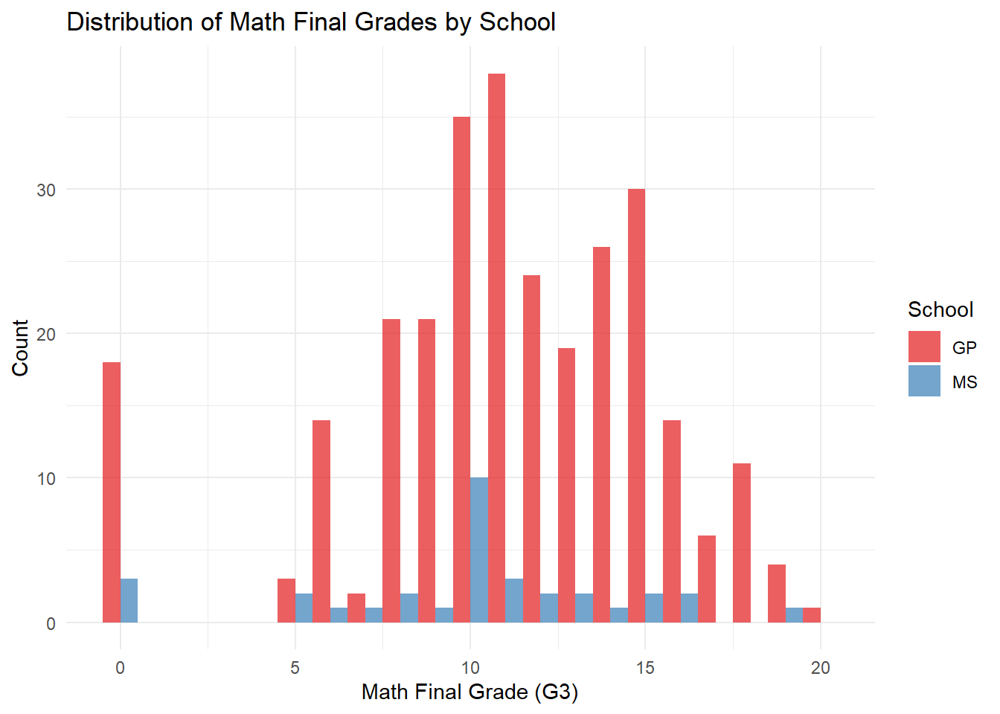
# Histogram for absences_math by schoolggplot(combined_data, aes(x = absences_math, fill = school)) +geom_histogram(position ="dodge", binwidth =1, alpha =0.7) +labs(title ="Distribution of Math Absences by School",x ="Number of Absences (Math)",y ="Count",fill ="School") +theme_minimal() +scale_fill_brewer(palette ="Set1")
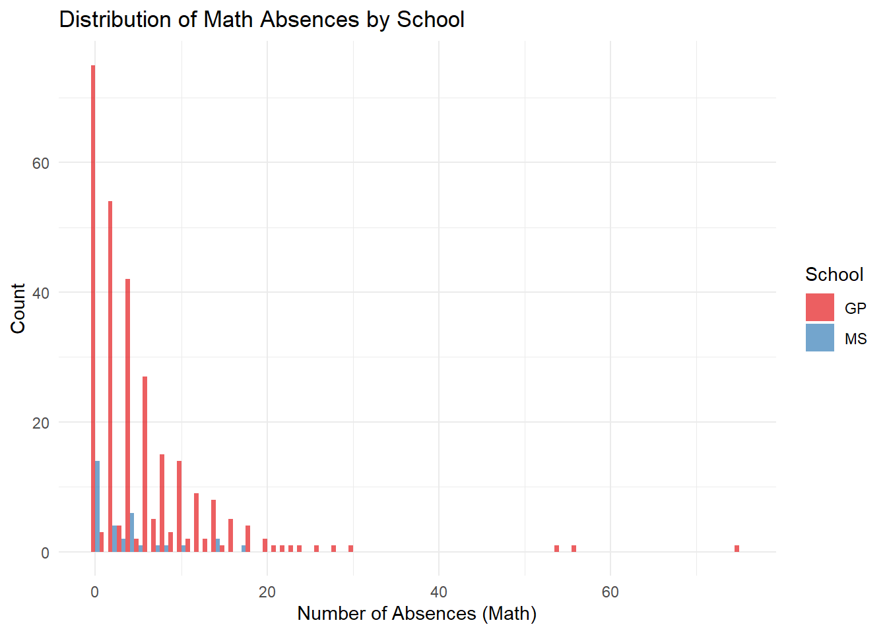
Overall distribution:
Grades range from 0 to 20, with most students scoring between 5 and 20. The distribution is roughly bell-shaped, with a peak around 10-12.
Comparison between schools:
GP (red) has significantly more students than MS (blue) across all grade levels. Both schools have similar distribution shapes, but GP’s bars are consistently taller due to larger student numbers.
Performance patterns:
Both schools have a peak in the 10-12 range, suggesting this is the most common grade range. There’s a notable number of students scoring 0 in both schools, which might indicate students who didn’t take the final exam or had special circumstances. The distribution is slightly right-skewed, with fewer students achieving the highest grades (18-20).
Specific observations:
GP has its highest count at grade 11, while MS seems to peak around 10-11. Both schools have relatively few students scoring in the 1-4 range. The number of students achieving top grades (18-20) is small for both schools, but present.
# For G3_math across sexggplot(combined_data, aes(x = G3_math, fill = sex)) +geom_histogram(position ="dodge", binwidth =1, alpha =0.7) +labs(title ="Distribution of Math Final Grade by Sex",x ="Math Final Grade (G3)", y ="Count", fill ="Sex") +theme_minimal()
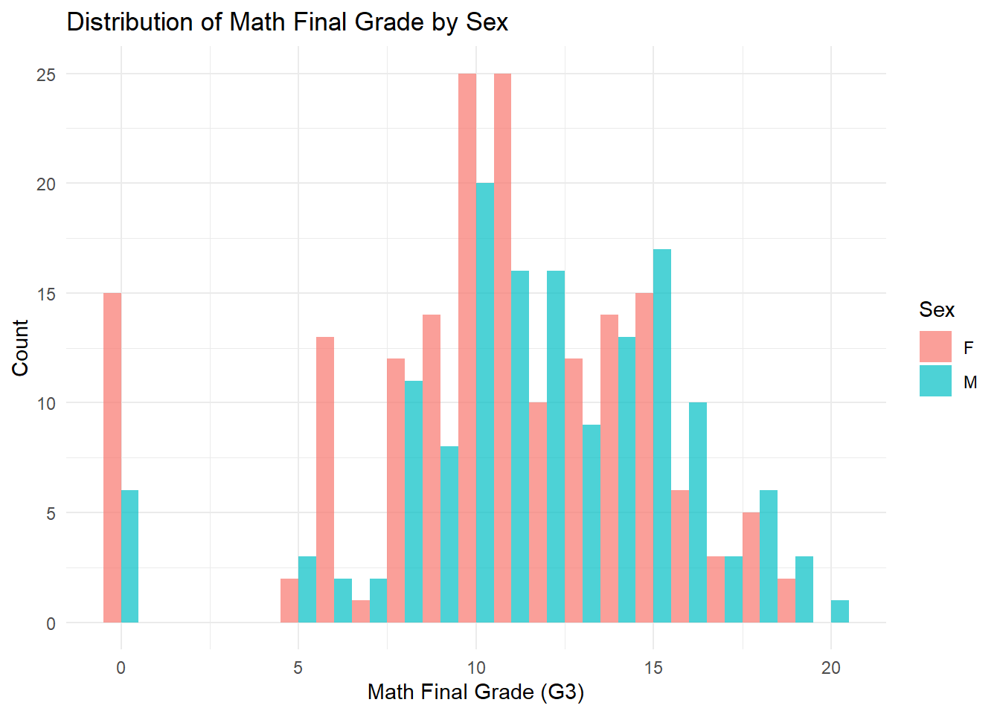
ggplot(combined_data, aes(x = G3_math, fill = sex)) +geom_density(alpha =0.7) +labs(title ="Kernel Density Plot of Math Final Grade by Sex",x ="Math Final Grade (G3)", y ="Density", fill ="Sex") +theme_minimal()
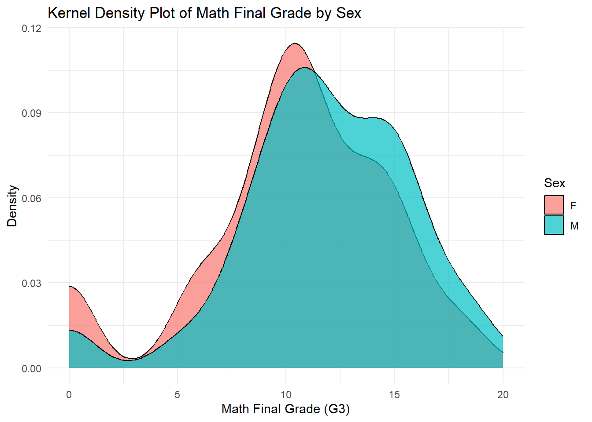
ggplot(combined_data, aes(x = sex, y = G3_math, fill = sex)) +geom_boxplot() +labs(title ="Boxplot of Math Final Grade by Sex",x ="Sex", y ="Math Final Grade (G3)", fill ="Sex") +theme_minimal()
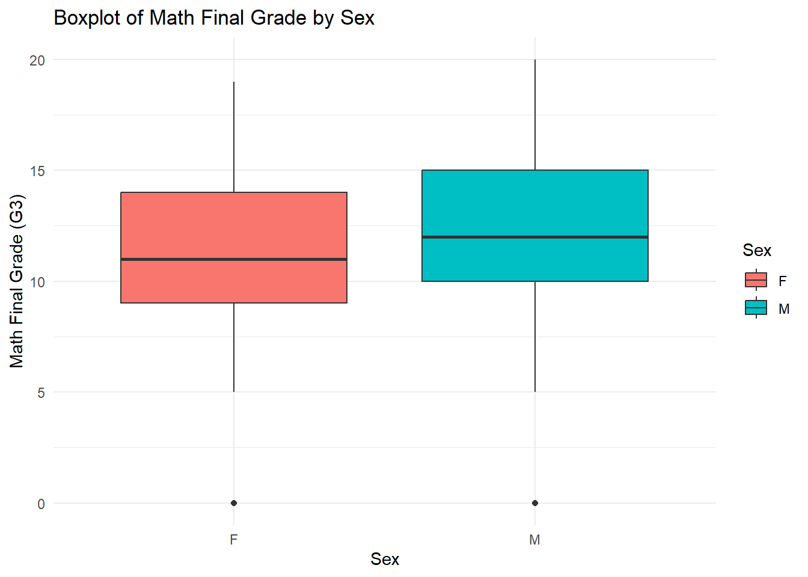
Overall distribution:
Grades range from 0 to 20. The distribution is roughly bell-shaped for both sexes, with peaks around 10-12.
Comparison between sexes:
Female (F) students are represented in pink, and male (M) students in blue. There appear to be slightly more female students overall, as the pink bars are generally taller.
Performance patterns:
Both sexes have similar distribution shapes, suggesting comparable overall performance. The highest counts for both sexes are in the 10-11 range. There’s a noticeable number of students scoring 0 for both sexes, which might indicate non-attendance or special circumstances.
Specific observations:
Females have higher counts in the lower grade ranges (0-7). Males seem to have slightly higher counts in the upper grade ranges (14-20). Both sexes have relatively few students scoring in the 1-4 range.
Kennel density plot shows wide distribution of the grades both in male and female. From box plot we can interpret that males are performing better in math final grade compare to female students.
• Create two scatter plots relating a G3 variable to other numeric variables (put G3 on the y-axis). You should jitter the points if they sit on top of each other. Color the points by a categorical variable in each. Add appropriate labels and titles.
# Scatter plotsggplot(combined_data, aes(x = age, y = G3_math, color = school)) +geom_jitter(alpha =0.7) +labs(title ="Math Final Grade vs Age",x ="Age", y ="Math Final Grade (G3)", color ="School") +theme_minimal()
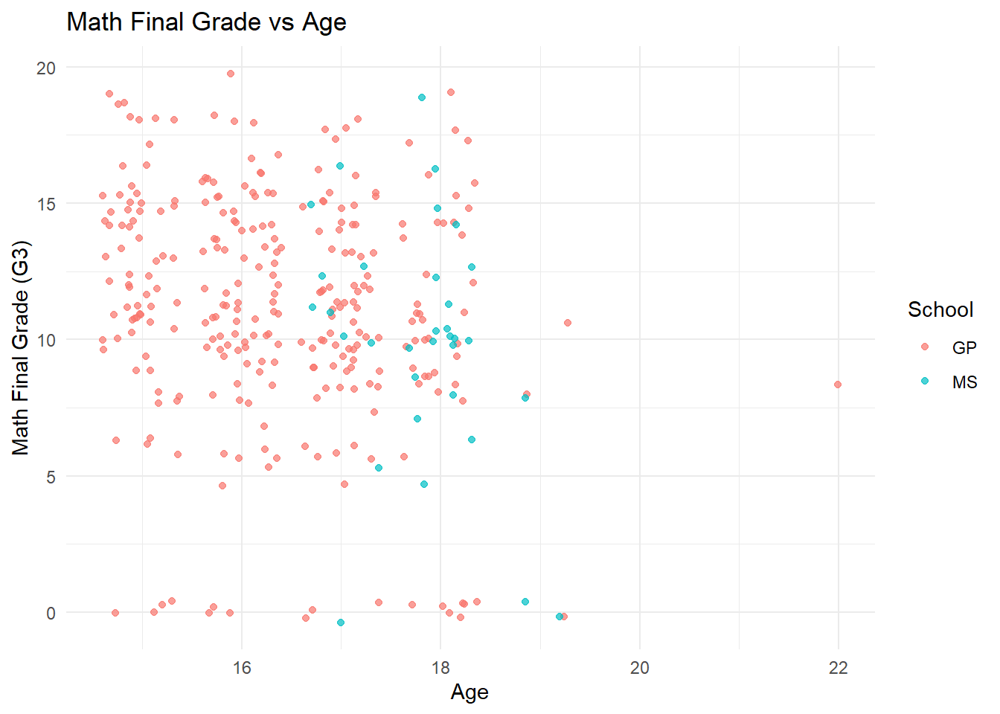
ggplot(combined_data, aes(x = absences_math, y = G3_math, color = sex)) +geom_jitter(alpha =0.7) +labs(title ="Math Final Grade vs Absences",x ="Number of Absences (Math)", y ="Math Final Grade (G3)", color ="Sex") +theme_minimal()
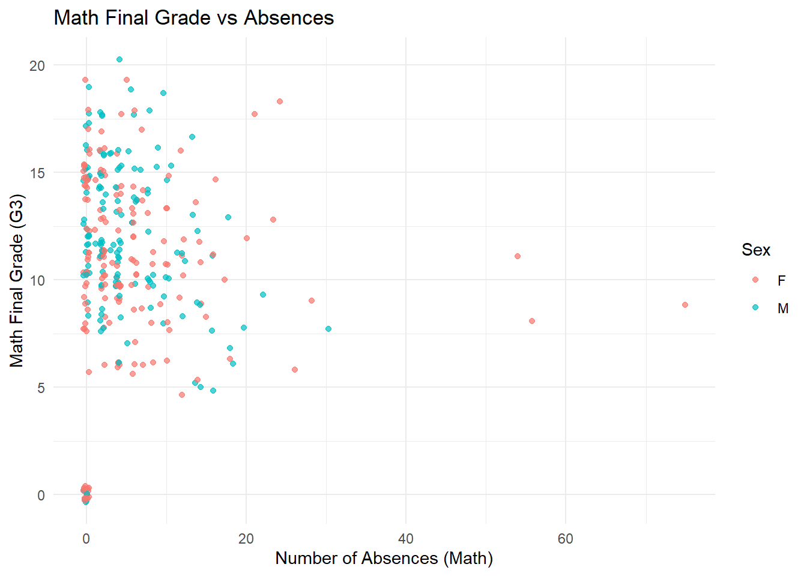
Math Final Grade vs Age Variability:
There’s high variability in grades for all age groups, suggesting age is not a strong determinant of math performance.
Notable features:
A cluster of students with 0 grades across various ages, which might indicate non-attendance or special circumstances. Some high-achieving older students (18-20) with top grades, showing age doesn’t necessarily limit performance.
Outliers:
A few students over 20 years old, with varying grade performance. Some very high achievers (grade 20) across different ages.
Math Final Grade vs Absences
Distribution of points: There’s a high concentration of points in the lower left corner, indicating many students with few absences and varying grades.The density of points decreases as the number of absences increases.
Gender comparison: Both males and females are well-represented across the grade and absence spectrum. There doesn’t appear to be a strong gender-based pattern in the relationship between absences and grades.
Absence-grade relationship: There’s a slight negative trend visible: as absences increase, there’s a tendency for grades to decrease. However, this relationship is not strong or clear-cut, as there’s significant variability.
Variability: There’s high variability in grades for students with few absences (0-10). Students with higher numbers of absences tend to have more mid-range grades, with fewer very high or very low scores.
Notable features: A cluster of students with 0 grades across various absence levels, which might indicate students who didn’t take the final exam. Some high-achieving students (grades 15-20) despite having a moderate number of absences (10-20).
Outliers: A few students with very high numbers of absences (40+) show varying grade performance. Some students achieve high grades despite having 20+ absences.
Implications: While there’s a slight negative relationship between absences and grades, it’s not as strong as one might expect. Other factors not shown in this plot likely play a significant role in determining grades. The similar patterns for males and females suggest that the absence-grade relationship is not strongly influenced by gender.
• Repeat the scatter plot step but use faceting to obtain graphs at each setting of another categorical variable.
#Scatterplot with faceting by one categorical variableggplot(combined_data, aes(x = age, y = G3_math, color = sex)) +geom_jitter(alpha =0.7) +facet_wrap(~school) +labs(title ="Math Final Grade vs Age by School",x ="Age", y ="Math Final Grade (G3)", color ="Sex") +theme_minimal()
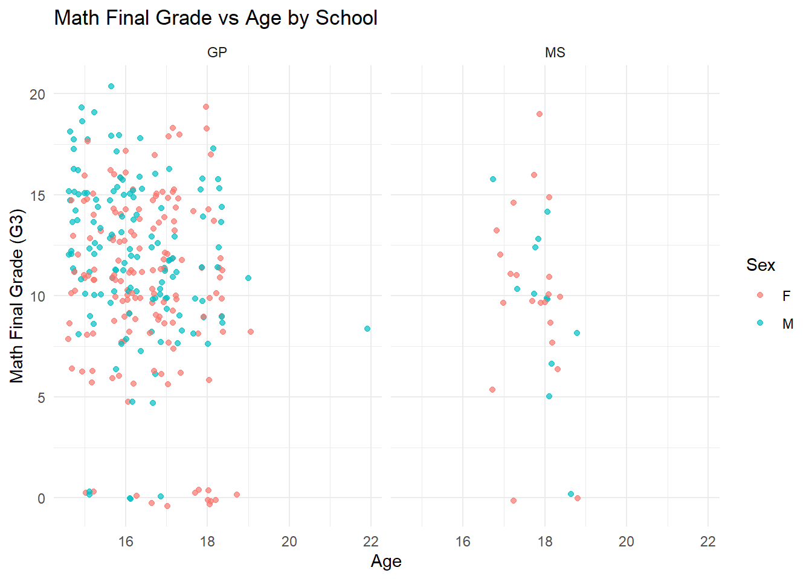
Math Final Grade vs Age by School
Gender distribution: Both schools have a mix of male and female students across all ages and grade levels. There doesn’t appear to be a clear gender-based pattern in the age-grade relationship for either school.
School-specific observations:
GP: Has a denser cluster of high grades (15-20) across ages 15-18. Shows more variability in grades for older students.
MS: Has fewer students overall, making patterns less clear. Seems to have a slightly more even distribution of grades across ages.
Outliers: Both schools have some students with 0 grades across different ages. GP has a few students over 20 years old, while MS doesn’t show students beyond 20 in this dataset.
Performance patterns: High achievers (grades 15-20) are present across most ages in both schools. Lower grades (0-10) are also distributed across all ages, suggesting age isn’t a strong determinant of performance.
• Repeat the scatter plot step but use faceting to obtain graphs at each combination of two categorical variables.
#Scatterplot with faceting by two categorical variablesggplot(combined_data, aes(x = absences_math, y = G3_math, color = internet)) +geom_jitter(alpha =0.7) +facet_grid(school ~ sex) +labs(title ="Math Final Grade vs Absences by School and Sex",x ="Number of Absences (Math)", y ="Math Final Grade (G3)", color ="Internet Access") +theme_minimal()
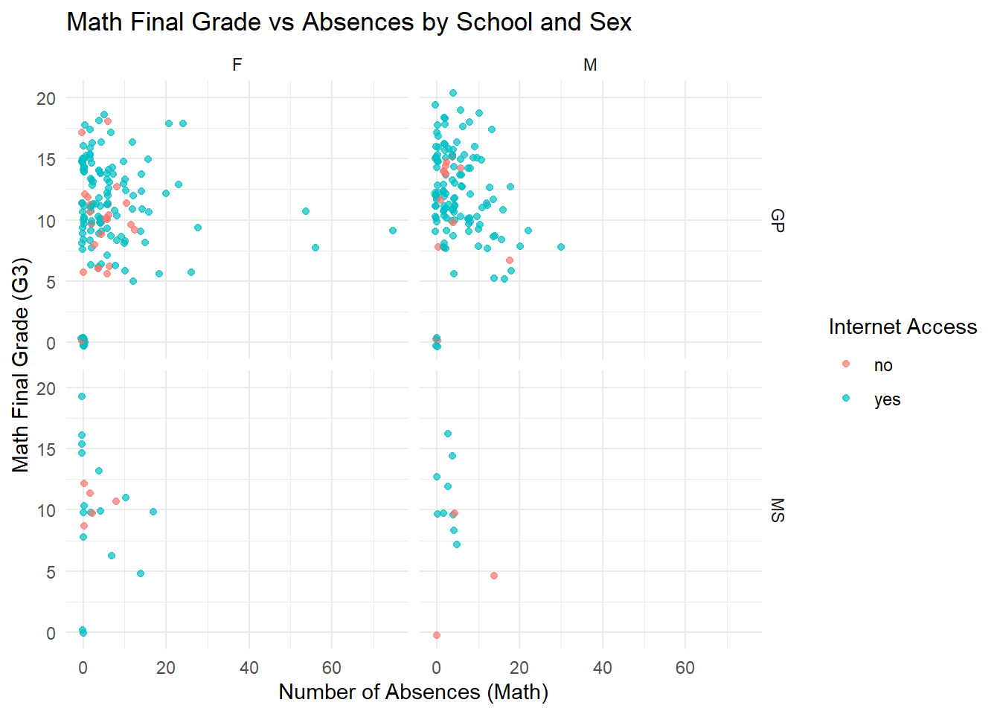
Overall distribution:
Most students have fewer than 20 absences, with grades ranging from 0 to 20. There’s a concentration of points in the lower left of each panel, indicating many students with few absences and varying grades.
School comparison: GP (top row) has significantly more students than MS (bottom row), as evidenced by the higher density of points. The range of absences and grades appears similar between schools.
Gender comparison: Both males and females show similar patterns in the absence-grade relationship. The distribution of grades and absences looks comparable between genders within each school.
Internet access: The majority of students have internet access (blue points) in both schools and for both genders. There doesn’t appear to be a clear pattern differentiating students with and without internet access in terms of grades or absences.
Absence-grade relationship: There’s a slight negative trend visible: as absences increase, there’s a tendency for grades to decrease. However, this relationship is not strong, as there’s significant variability in grades even for students with few absences.
Outliers: A few students have a very high number of absences (40+), particularly in the GP school. Some students achieve high grades despite having 20+ absences. There are clusters of students with 0 grades across various absence levels in both schools and genders.
School-specific observations: GP shows a wider range of absences and a more continuous distribution of grades. MS has fewer data points, making patterns less clear, but seems to show similar trends to GP.
Gender-specific observations: Female students in GP seem to have slightly more high-grade achievers with low absences compared to males. Male students in GP appear to have more outliers with high numbers of absences.
Implications:
The absence-grade relationship is similar across schools and genders, suggesting that attendance impacts performance consistently. Internet access doesn’t seem to strongly influence the absence-grade relationship, though a more detailed analysis might reveal subtle effects. Other factors not shown in this plot likely play significant roles in determining grades, given the high variability in grades for students with few absences.